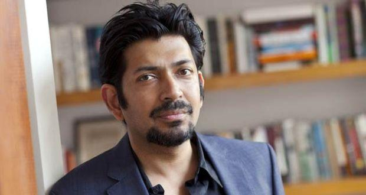

Mi-am propus să ofer în fiecare zi conținut nou: o recomandare de carte, de melodie, o biografie de autor, un citat, o glumă... Astăzi este rîndul:

Dr. Siddhartha Mukherjee (n. 1970) este un biolog și medic indian, specializat în genetică și oncologie.Pe lîngă cariera medicală, Mukherjee este și un scriitor premiat, autor al două cărți absolut remarcabile: Gena, publicată în 2016 și Împăratul tuturor bolilor, publicată în 2010. Ambele cărți sînt scrise cu o expertiză deosebită și i-au adus autorului diverse premii științifice și literare.
Totodată, Siddhartha Mukherjee a fost prieten și coleg al doctorului și autorului Paul Kalanithi și un mare admirator al chimistului italian Primo Levi, după cum el însuși îl descrie elogios într-un articol.